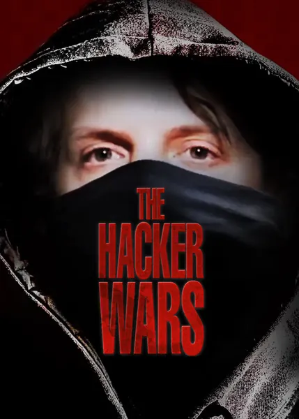

2014
Документальный
Документальный фильм о войне между хактивистами и государством — история Барретта Брауна, Джереми Хаммонда и других, получивших реальные тюремные сроки за действия в сети, которые раньше считались безобидными проделками, а теперь квалифицируются как терроризм. Картина демонстрирует асимметрию сил: обвинение, располагающее колоссальными ресурсами, противостоит людям, чье единственное оружие — клавиатура. Это хроника эпохи, когда хакерство впервые стало основанием для предъявления политических обвинений.
Описание на английском
A documentary about the war between hacktivists and the state: the cases of Barrett Brown, Jeremy Hammond and others who received real prison terms for online actions once called mischief and now called terrorism. The film shows the asymmetry: a prosecution with endless resources against individuals whose weapon is a keyboard. A chronicle of the era when 'hacking' first became a political charge.